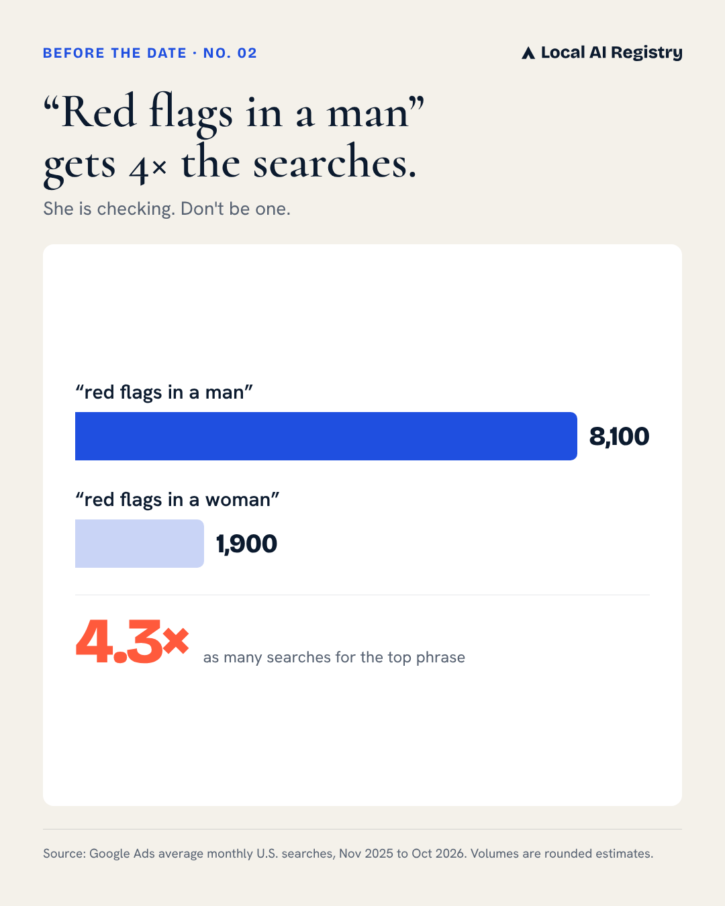
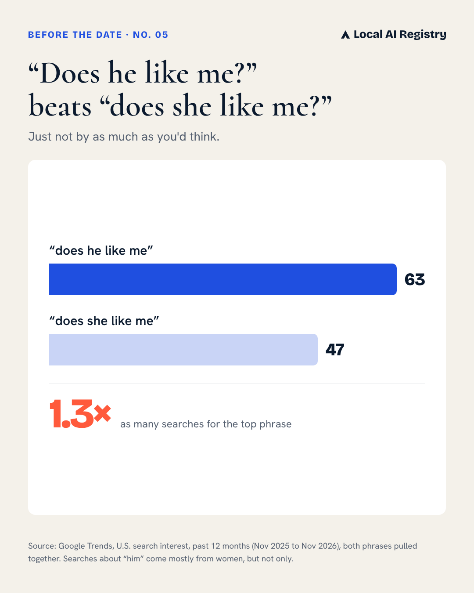

Each post is 1080 × 1350 (Instagram 4:5). Download one at a time or grab all of them in a zip. The caption for each post is under it, with a copy button. Keep “Search data, not science” in every caption. Google does not say who searched, so posts compare searches about “him” with searches about “her.”
No. 01
Caption
She already knows what she's wearing. “First date outfit” gets about 4,400 searches a month. “First date outfit men” gets about 1,000. Guys: a clean fit and a fresh haircut go a long way. Search data, not science.
What's your go-to first date fit?

No. 02
Caption
Before the date, she's doing her homework. “Red flags in a man” gets about 8,100 searches a month, more than 4 times “red flags in a woman” (about 1,900). Show up on time, put the phone away, be kind to the server. Search data, not science.
Biggest first date red flag? Go.
No. 03
Caption
Mixed signals are exhausting. “How to get him to commit” gets about 260 searches a month. “How to get her to commit”? About 10. If you know what you want, saying it out loud is the move. Search data, not science.
Tag someone who needs to hear this.
No. 04
Caption
She's thinking long term. Searches for “is he the one” run about 1.5 times “is she the one” in Google Trends over the past year. Guys: consistency is what answers that question. Search data, not science.
When did you know?

No. 05
Caption
Overthinking is universal. “Does he like me” runs about 1.3 times “does she like me” in Google Trends over the past year. So yes, she's wondering too. Text back. Make the plan. Search data, not science.
Double text: yes or no?
No. 06
Caption
Guys, you're not alone. “How to tell if a girl likes you” gets about 1.4 times the searches of “how to tell if a guy likes you” in Google Trends over the past year. Easiest way to find out? Ask her out. Search data, not science.
Tag the friend who overthinks everything.
No. 07
Caption
Trust issues are not just a her thing. “Is he cheating” runs only about 1.3 times “is she cheating” in Google Trends over the past year. Be the person nobody has to Google about. Search data, not science.
No. 08
Caption
Overthinking runs Monday to Friday. Searches for “does he like me” sit about 5% to 8% above average on weekdays and drop about 15% below on Saturdays and Sundays. Maybe that's when the dates happen. Guys: a midweek text goes further than you think. Search data, not science.
What day do you overthink the most?
Every number comes from saved Google Trends and Google Ads pulls (Nov 2025 to Nov 2026). Searches about “him” come mostly from women, but not only. Also see the Correlation Series.
AI is changing every day. Local AI Registry's dedicated local AI research team keeps testing to find what works best.